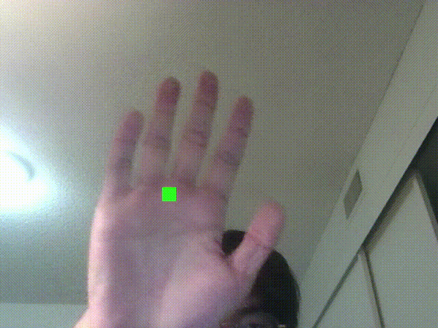
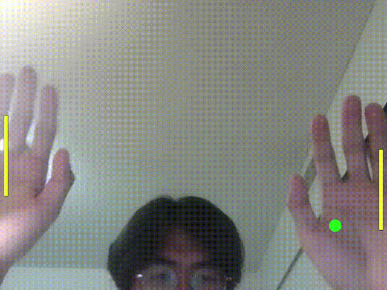

Final prototype presentation
This is a two-player "PONG" game controlled remotely by their hand.
(Recommend using Google Chrome)

Instruction
Click START below to start the game.
Control the paddle with your palm to move and bounce the ball.
Enjoy the game.
Problems encountered / Making process
1. Attach the paddles by tracking specific joint points on the hands.
2. Set up a free-moving ball.
3. Set up collision detection between the ball and the paddles.
4. Set the ball to be regenerated after going out of bounds.

4. Set the ball to be regenerated after going out of bounds.

6. Set the start button.